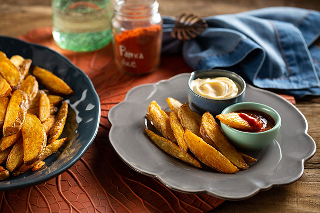

Para as batatas ficarem macias por dentro e
crocantes por fora, o truque é cozinhar antes
de assar. Na hora de cozinhar, vai hortelã,para
dar toque de frescor. E na hora de assar,
vai páprica, que além de dar uma cor linda, ainda
garante mais uma camada de sabor.
Autor: Panelinha
Tempo de preparo: até 1h
Serve:até 6 porções